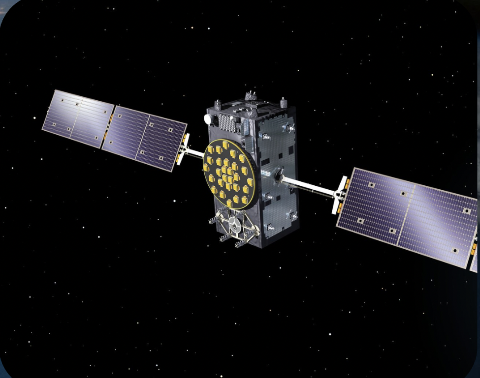

Clock Bias is one of the most fundamental problems that causes errors in GNSS positioning. Predicting these errors is crucial for improving the GNSS navigation precision. We used the actual GNSS satellite clock data by CDDIS to assess how the different RNN architectures varies while predicting the satellite clock-bias.We trained GRU and LSTM models and found that GRUs handled the raw drifting bias more accurately.GRUs obtained a R2 of 0.98 which was much better than that of LSTMs(0.05-0.49).Subsequently, we used a basic trends-residual transformation for the satellite bias signal, which helped LSTMs to achieve R2 of 0.99.We also observed that the interpolation of the clock drift affected the forecasting performance no- tably.Finally, we combined all these protocols and presented a clean and replicable pipeline for the GNSS clock bias prediction.